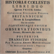

John Flamsteed discovers the planet, Uranus (he identified it as a star -34 Tauri)
1702
Tabulae Astronomicae is published under the name of Philippe De La Hire (Creator)
1712-1725
John FLamsteed’s Historia Coelestis Britannica is published and it lists over 3,000 stars with their positions.

1718
Edmond Halley publishes measurements of the motions of certain stars
1731
John Hadley invents the sextant, an instrument that makes it possible to measure the height of a start above the horizon very precisely. This was used in maritime navigation too.
1730s
Two and three lens telescopes are used, along with reflecting telescopes using metal mirrors
1750
"An Original Theory or New Hypothesis of the Universe" is published by Thomas Wright, an English scientist and architect. He calls out a disc-like geometry in the stars that form the Milky Way
1758
Halley’s comet returns after its first visit in 1682.